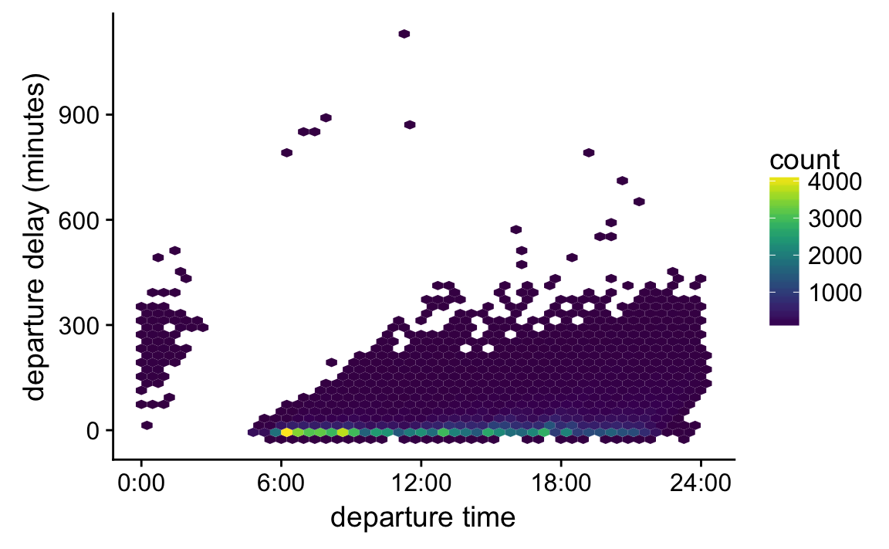
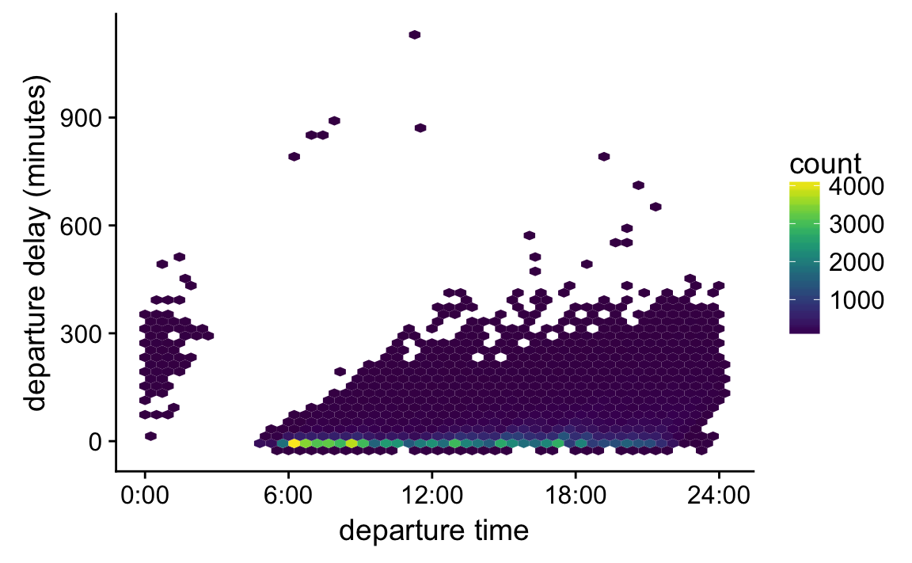

6 Handling overlapping points
Let’s revisit this figure from Chapter 4 and focus on an aspect we ignored there:  I have labeled this figure “bad” here because the points overlap and partly obscure each other. A simple way to ameliorate this issue is to use partial transparency:
I have labeled this figure “bad” here because the points overlap and partly obscure each other. A simple way to ameliorate this issue is to use partial transparency: 
However, making points partially transparent is not always sufficient. For example, the same dataset contains fuel economy for both city and highway driving. If we plot those two quantities against each other, we obtain the following figure. 
Because fuel economy is rounded to whole integers in this dataset, many points lie exactly on top of each other. While these fully overlapping points appear darker in the plot, the visual appearance is that of one darker point rather than of a set of points plotted in the same location. We can emphasize the number of points in the same locations by applying a small amount of jitter, i.e., displacing each point randomly by a small amount.

However, when jittering we have to make sure not to overdo it. If we jitter too much, we end up placing points in locations that are not representative of the underlying dataset and hence are creating a misleading visualization of the data. 
For example, in this particular case the extreme jittering creates the impression that for some cars the highway economy can fall below the city economy. However, such cases do not exist in the original dataset.
When the number of points grows large, it can be helpful to indicate the point density, for example with contour lines. This technique works well for the following figure, which shows the total population as a function of area for counties in the midwest. 
If we want to emphasize the overall features of the distribution rather than the individual points, we can also show only the contour lines and leave out the individual points. 
Finally, we can add a smoothing line to highlight the overall trend in the relationship between the two variables. 
 
